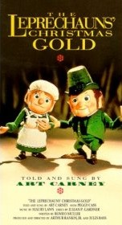
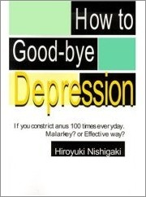

18th
March
2007
Sweater With a Chimpanzee Playing a Ukulele
I found this on eBay a few years ago, got it for something like $10:

Any words describing its beauty would just be superfluous.
posted in Miscellaneous | 4 Comments

I found this on eBay a few years ago, got it for something like $10:
Any words describing its beauty would just be superfluous.
posted in Miscellaneous | 4 Comments

The Waffle Whiffer wishes everyone a Happy St. Patrick’s Day with this nifty Uncle O’Grimacey plastic bag puppet. As a kid I was told never to play with plastic bags … but puppets were AOK! Thanks Waffle Whiffer! Happy St. Patrick’s day everybody!
posted in Art, Food | 4 Comments
No celebration of cheesy Irishness is complete without Lucky the Leprechaun:
This is the very first commercial for Lucky Charms. This was done by Bill Melendez — before he started his own studio to produce the Peanuts specials, he did a lot of work on animated commercials. This commercial is from about 1964.
I love this one because it reminds me of Kites Are Fun, by the Free Design:
posted in Animation, Food, Midcentury, Music, Television | 2 Comments
The Leprechauns’ Christmas Gold [Amazon.com]
The Leprechauns’ Christmas Gold is — and I say this as a massive Rankin/Bass fan — a disappointment. First off, why on earth didn’t Rankin/Bass make this as a St. Patrick’s Day special? Heck, even Groundhog Day got a Rankin/Bass special, but instead they chose to further glut their already overloaded Christmas special catalog with this. Leprechauns belong to St. Patrick’s Day, period. Rankin/Bass had a bad history of cross-polluting their holidays (see: Rudolph & Frosty’s Christmas in July, Rudolph’s Shiny New Year). But this is just a straight out omission. Okay, okay, it’s got the song “Christmas in Kilarney,” which nearly sells me on the concept… but really it’s a stretch.
Despite that, with all its over-the-top stereotypical Irish-like goodness, it’s Rankin/Bass’ sort-of St. Patrick’s Day special. If you squint. And turn the volume down. [and drink! -Hanford] It stars Art Carney as the leprechaun Blarney Kilakilarney, whose clan lives on a remote, fog-cloaked island uninhabited by humans. They share the island with a competing leprechaun clan, including his ex-wife. Along comes a boy looking for a Christmas tree, he takes the one on the island, which was really a trap for the banshee, who’s now on the loose, and wants the leprechauns’ gold, blah blah blah, she’s after me pot o’ gold!, blah blah blah, the end. Unless you’re a Rankin/Bass diehard, go watch Darby O’Gill and the Little People instead.
But, all this talk of “you’re just after me pot o’ gold!” gives me an excuse to post a link to this. Which only makes sense if you have your speakers on. And even then, not really. It just makes me giggle.
Happy St. Patrick’s Day!
posted in Animation, Rankin/Bass, Television | 1 Comment

I love midcentury futurism names. I dig on the Cinerama, and I can’t get enough juice from the Juice-o-matic. I named my game studio Monolux, I named my feedback system the Suggestomatic, and I named my game’s serial number generator the Tabulatron. Not only love those names, but I love the logos, styles, and aesthetics they conjure up. So naturally I became giddytronic when I saw Thrift Store Adventure’s photo collection of midcentury names and logos! There’s the Filmosonic, the Delineascope, the Selectron Semimatic, and WTF the Superheterodyne!!!! Check them out now!
posted in Design, Midcentury, Space Age | 1 Comment
Because the POWER of Luie Luie’s liner notes is just too overwhelming to the average unsuspecting Junkyard Clubhouse frequenter … we have DISTILLED its power into digestable, bite-sized quotes of WISDOM that will change DAILY. And change you daily.
Yes, every day at midnight the Luie-matic 5000 will pick a random sentence from off the back cover of the “Creator of TOUCHY” album and serve it up in a little box on the left-hand sidebar on JYC. Included with the quote is the paragraph and sentence number where the quote appears, if you’d like to see it in context. Not that you’d need to, because just about every sentence is, in and of itself, unfiltered magical brilliance.
We hope that by displaying a random quote daily, you’ll be seduced slowly by these affirmative truisms that remind you that the Power of Touch and the Power of Music is indeed powerful power. If you think you can handle it check out the entire transcription. You’ll be glad you did. Otherwise, check our sidebar for this little daily gift.
posted in Music | Comments Off
A leprechaun bit us in the butt today, and we’ve got the Saint Patrick’s Day fever but good.

We found these in a little grocery store in Downieville, California. Downieville is so small that even the people who live there have never heard of it. Anyway, we spied these sitting in the deli case, and did a spit-take. Because nothing says “Irish” like a cartoon shamrock, a liberal use of “o’”, and “a wee bit o’ garlic!”
Speaking of liberal uses of “o’”, meet Uncle O’Grimacey:
If that doesn’t make you want a Shamrock Shake… you’re in good company.
We’re cooking up our St. Paddy’s plans — Hanford’s 100% Irish, and I’m 0%, so he’s in charge. I’ll just be happy if I can get some corned beef & soda bread. And maybe a Shamrock Shake.
posted in Food, Television | 1 Comment
How to Good-Bye Depression: If You Constrict Anus 100 Times Everyday. Malarkey? or Effective Way? [Amazon.com]
A thoughtful treatise from Hiroyuki Nishigaki. From the Book Description on Amazon:
I think constricting anus 100 times and denting navel 100 times in succession everyday is effective to good-bye depression and take back youth. You can do so at a boring meeting or in a subway. I have known 70-year-old man who has practiced it for 20 years. As a result, he has good complexion and has grown 20 years younger. His eyes sparkle. He is full of vigor, happiness and joy. He has neither complained nor born a grudge under any circumstance. Furthermore, he can make love three times in succession without drawing out.
In addition, he also can have burned a strong beautiful fire within his abdomen. It can burn out the dirty stickiness of his body, release his immaterial fiber or third attention which has been confined to his stickiness. Then, he can shoot out his immaterial fiber or third attention to an object, concentrate on it and attain happy lucky feeling through the success of concentration.
If you don’t know concentration which gives you peculiar pleasure, your life looks like a hell.
Don’t you feel better already?
posted in Miscellaneous | 3 Comments

The lame photo here does not do this justice. It’s an animated PONG T-shirt, The shirt takes batteries and the little paddles and ball bounce around on your chest. For guys it’s the perfect way to make sure you get your ass kicked and lunch money stolen. For girls it’s the perfect way to meet the level 12 Necromancer of your dreams. But hey, it sure looks cool. Check it out on ThinkGeek to see video of it in action. [Via Game|Life]
posted in Video Games | Comments Off